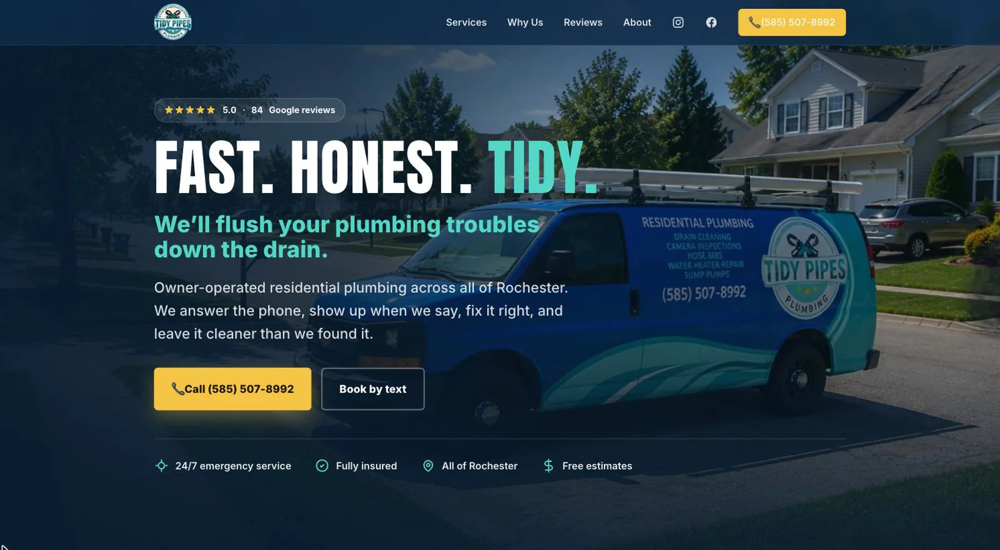
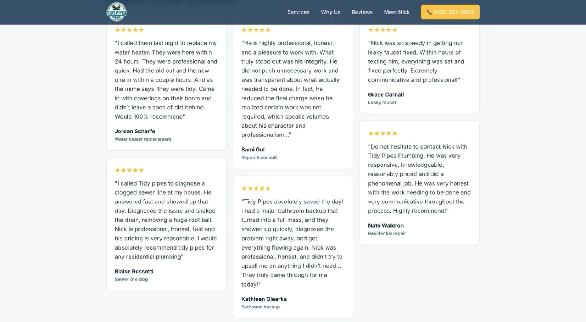

Tidy Pipes Plumbing
Nick Parlet · Rochester, New York
Design, copy, and build
Nick Parlet runs a one-man plumbing shop in Rochester and has built a following online as a plumber who skates. He had a strong brand and a website that did not match it, so I built one on spec before he asked.
The homepage opens with a video. A clog spins down the drain, the camera follows it down the pipe and out into daylight, and stops in front of his van. The headline is Fast. Honest. Tidy.

The rest is a one-page trades site: navy and yellow, bold type, one local plumber who does it all. The services are his real services. The reviews are his actual Google reviews, quoted word for word, all five stars. The photo is him in front of the truck.

Most people looking for a plumber are on their phone, so the mobile version is a separate build, not a shrunk-down desktop. The video plays behind the hero, the call button stays fixed at the bottom, and the services expand one tap at a time.